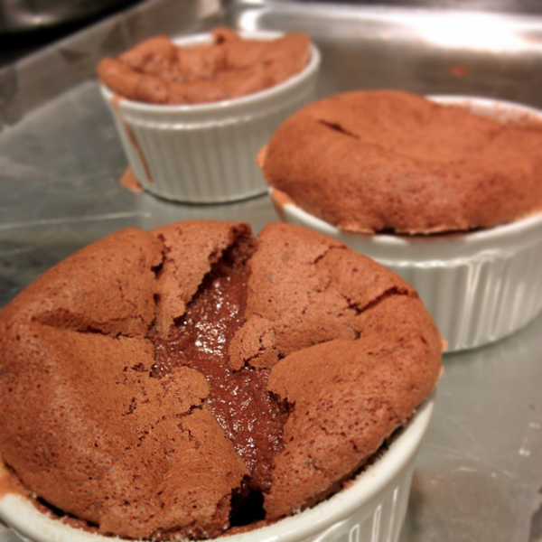

Chocolate Soufflé Recipe
I enjoy all kinds of food, but I tend to avoid desserts because of how sugar-packed they can be. I think baking your own desserts is a good way to get around this. Plus, baking is surprisingly similar to programming: you follow an algorithm using limited resources, you have to be exact with measurements, and a single step out of order can ruin everything. Your family and friends might also volunteer to be QA testers.
I've been making these for nearly 6 years and enjoy baking them as much as I do eating them.
A convenient feature about this recipe is that you can prepare the ramekins with the uncooked soufflé and refrigerate it for a couple hours before baking.
To make 8 6-ounce soufflés, you'll need:
- 8 6-ounce ramekins
- Unsalted butter at room temperature to grease the ramekins
- Sugar to coat the greased ramekins
- 6 ounces of semisweet chocolate pieces
- 6 large eggs
- 2/3 cup of sugar
- 1/2 teaspoon of kosher salt
- 2 tablespoons of whole milk (or heavy cream)
- 1 teaspoon of pure vanilla extract
Here's the recipe:
- Preheat oven to 350 degrees
- Grease the inside surfaces each ramekin with softened butter
- Sprinkle the inside of each ramekin evenly with sugar
- Set the ramekins on a baking sheet
- Place chocolate pieces in the top of a double boiler
- It may help to add a tablespoon of butter to the chocolate pieces
- Heat over medium heat until the chocolate melts
-
Separate the eggs
- Place yolks in a stand mixer bowl
- Place whites in a large mixing bowl
- Add 1/2 cup of the sugar and all the salt to the egg yolks
-
Beat egg yolks on medium-high speed until light and fluffy (about 3-4 minutes)
- Should take 3 seconds to dissolve when lifted
- Stir milk and vanilla into melted chocolate and transfer to a large mixing bowl
- Stir 1/3 of the egg yolk mixture into the chocolate mixture
- Repeat step 12 two times, using all the egg yolk mixture
- Using a stand mixer with a wire attachment, beat the egg whites on medium speed until fluffy, for about 3-4 minutes
- Add remaining 1 tablespoon of sugar to egg whites
-
Beat egg whites for 1 more minute on medium speed until shiny
- Should form peak when lifted
- Stir 1/3 of egg whites into chocolate mixture
- Repeat step 17 two times, using all the egg white mixture
-
Divide mixture evenly among prepared ramekins
- You can refrigerate for a few hours if you want to bake later
- If you refrigerated, bake for 20-25 minutes
- Else, bake for 15-17 minutes or until soufflés are puffed and cracked on top
- Serve immediately